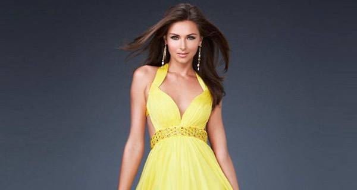

Выбор вечернего платья для любого случая
 Вечернее платье – элегантная и роскошная деталь гардероба женщины. Существует множество фасонов и цветов этой одежды, порой среди них очень трудно отыскать правильное платье, подходящее именно вашему облику.
Светский раут, выход на сцену, свадьба лучшей подруги – каждое из этих мероприятий требует неукоризненного внешнего вида. Маникюр, прическа и аксессуары должны отлично сочетаться между собой. Но «гвоздь программы» – это, конечно же, изысканное вечернее платье, купить которое нужно с учетом возраста и «шероховатостей» фигуры. Мы дадим несколько простых, но очень важных советов по выбору модного вечернего платья.
Фасон вечернего платья
Первоочередный фактор при покупке любой одежды – это, конечно, женская фигура. Эксклюзивное платье должно идеально сидеть, подчеркивая все выгоды «экстерьера», не топорщиться и не задираться. Для каждого типа фигуры имеются свои правила.
Плечи. Барышни с широкими плечами могут прибегнуть к нарядам, которые смещают внимание на талию и расширяются книзу. Если у вас, наоборот, узкие плечи и массивный низ, выбирайте платья с завышенной линией талии, рюшами и силуэт наподобие «хвоста русалки». Красивые покатые плечи можно гордо расправить и оголить, сделав выбор в пользу одежды без бретелей. Широкие шлейки и шаль показаны дамам с острыми угловатыми плечами.
Вечернее платье – элегантная и роскошная деталь гардероба женщины. Существует множество фасонов и цветов этой одежды, порой среди них очень трудно отыскать правильное платье, подходящее именно вашему облику.
Светский раут, выход на сцену, свадьба лучшей подруги – каждое из этих мероприятий требует неукоризненного внешнего вида. Маникюр, прическа и аксессуары должны отлично сочетаться между собой. Но «гвоздь программы» – это, конечно же, изысканное вечернее платье, купить которое нужно с учетом возраста и «шероховатостей» фигуры. Мы дадим несколько простых, но очень важных советов по выбору модного вечернего платья.
Цвет вечернего платья
Новые коллекции будут богаты следующими вариациями вечерних платьев:
- гипюровые модели;
- бальные платья с пышными юбками в несколько рядов;
- гипюровые модели;
- наряды с боковым разрезом;
- бандо;
- Смелые глубокие вырезы
- Соблазнительные разрезы
- Асимметрия снова актуальная
- Вышивка — царская роскошь
ТАБЛИЦА РАЗМЕРОВ
| Международные размеры | XS | S | M | L | XL | XXL |
| Отечественные размеры | 42 | 44 | 46 | 48 | 50 | 52 |
| Обхват груди см. | 84 | 88 | 82 | 96 | 100 | 104 |
| Обхват талии см. | 64 | 68 | 72 | 76 | 80 | 84 |
| Обхват бедер см. | 90 | 94 | 98 | 102 | 106 | 110 |
| Рост см. | 158-170 | 158-170 | 164-176 | 164-176 | 164-176 | 170-176 |
Для свадебных и вечерних платьев, размеры и маркировка у разных производителей и в разных странах мира могут отличаться. Запомните, что единой таблицы размеров не существует, вся информация даётся примерно. Уточняйте у консультантов в свадебных салонах типовые размеры интересующей модели платья и производителя.